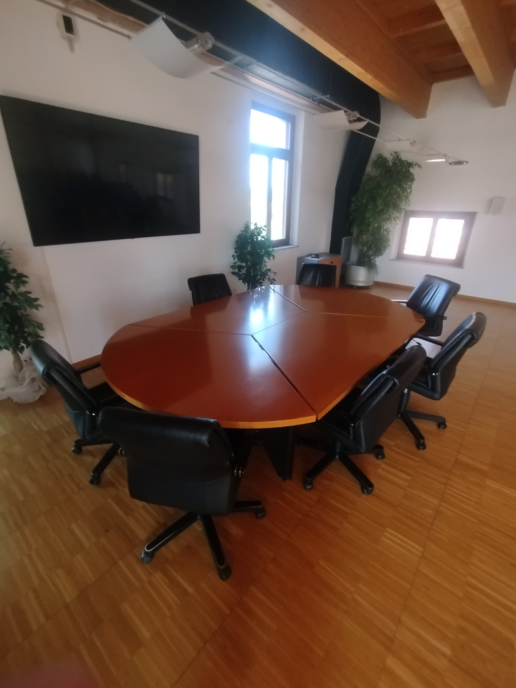

Racconto dell'esperienza
In questa sezione descrivo il mio percorso formativo giorno dopo giorno, analizzando gli aspetti più significativi della mia attività in Comune.
Focus: La Giornata Particolare
Aspetto Tecnico (La procedura di selezione): Durante il tirocinio ho avuto l'opportunità di assistere attivamente alla procedura di interpello per l'assunzione di personale operativo. Nello specifico, ho affiancato la commissione esaminatrice durante la sessione di colloquio orale per la selezione di 2 operai (scelti su una rosa totale di 7 candidati). Ciascun colloquio ha avuto una durata di un'ora intera, un tempo significativo che mi ha permesso di seguire tutte le fasi formali previste: dall'identificazione del candidato, alle domande tecniche e attitudinali, fino alla valutazione a porte chiuse. Il mio compito tecnico è stato quello di supportare la verbalizzazione informatica di questa intensa sessione, registrando i punteggi e collaborando alla stesura della graduatoria finale su foglio di calcolo.
Aspetto Emotivo (Cosa ho imparato): Questa giornata è stata la più stimolante del percorso. Vedere un colloquio strutturato della durata di un'ora mi ha fatto capire quanta attenzione e precisione la Pubblica Amministrazione dedichi alla selezione del personale. Dal punto di vista personale ed emotivo, osservare i candidati gestire la tensione per un'ora intera davanti alla commissione è stato una grande lezione di vita: ho compreso l'importanza di mantenere la calma, l'autocontrollo e l'esposizione chiara delle proprie competenze, tutti elementi che mi saranno utilissimi in futuro quando toccherà a me affrontare il mondo del lavoro.
